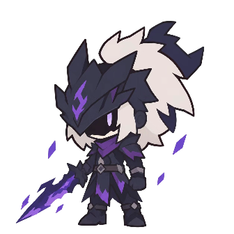
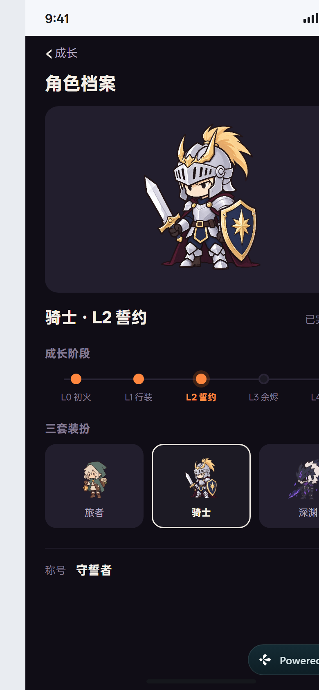

CINIS.
一款游戏化的自律产品：把习惯养成变成一场角色扮演——三模式机制、魂火成长体系，以及一套完整可交互的高保真原型。

项目概述 Overview
01CINIS 把自律重新讲成一个故事。用户对每日任务做出承诺、积累魂火，并在三种不同模式下面对分阶段的后果——让坚持像一段想继续读下去的故事，而不是一个怕断的连续打卡。
产品背景 Product Background
02主流自律 / 习惯类应用大多围绕「连续打卡 + 提醒」构建：漏一天，数字清零，动力随之消失。这种设计把失败等同于惩罚，短期有效，长期却容易让人放弃。
- 为什么把「自律」从压力工具转成叙事体验：用角色、模式与成长，让用户愿意为「继续这个故事」而坚持。
- 取舍放弃「零容忍连续打卡」的强约束，换取更宽容、可持续的长期留存路径。
- 支持用统一的「今日」入口承载每日行动，再用模式与魂火把行动放进一条可感知的成长线。
设计问题 Design Problem
03核心问题：如何在不制造羞耻感的前提下，制造真实的后果感？如果失败没有代价，游戏失去张力；如果失败过于严酷，用户直接流失。设计需要在「紧张」与「可持续」之间找到平衡。
- 问题失败必须「有分量」，但不能「一票否决」——否则违背长期自律目标。
- 取舍用分档难度（旅者 / 骑士 / 深渊）承接不同承受力的用户，而非一套规则打天下。
- 支持每档拥有独立的失败分支与恢复路径，让「后果」可预期、可挽回、可叙事。
三模式机制 Three-Mode Mechanism
04 · 旅者 / 骑士 / 深渊同一产品提供三种「契约强度」：旅者无门槛、骑士可追回、深渊高风险。切换模式时，卡片底色、强调色、魂火上限、门槛、角色立绘、任务数与文案随之同步切换——不是换色，而是换一整套规则与叙事。
无门槛
宽容起步；失败后从一簇小火重新开始。用于建立第一个习惯。

可追回的誓约
失败进入「誓约警戒」，损失可在后续追回（REKINDLE）——有张力，不绝望。

契约已断
高回报、狠重置：契约断裂后魂火归零，需从浅色「重新开始」。

- 为什么不同用户对「压力」的耐受差异极大；三档让产品同时服务新手与进阶者。
- 取舍三套失败分支各自独立成页（结构 + 视觉），成本更高，但避免「只是换色」的廉价感。
- 支持形态、文案、角色与数值随模式联动，让「选择模式」本身就是一次有意义的承诺。
魂火成长体系 Soulflame Growth
05
魂火是核心货币：随完成任务而增长，驱动阶段推进，并把「势头」可视化。里程碑石碑标记每个阶段——进度成为一条你真正看得见的路。
- 为什么抽象的「坚持」很难被感知；把进度外化为可积累、可看见的魂火与路径，强化正反馈。
- 取舍以场景化路径 + 徽章替代「进度条」，牺牲一部分信息密度，换取情绪与叙事。
- 支持完成任务即点亮魂火、推进阶段与成就，形成「行动—反馈—再行动」的闭环。
信息架构 Information Architecture
06四个顶层标签，各自拥有聚焦的子树。结构保留单一的「今天」入口，同时让目标、成长与设置下沉一层，降低首屏认知负担。
今日 Today
- 今日任务
- 完成方式弹层
- 专注计时
- 任务完成反馈
- 阶段结算
目标 Goals
- 目标列表
- 新建目标
- 目标详情
- 编辑目标
成长 Growth
- 个人成长
- 角色档案
- 成就墙
我的 Me
- 历史记录
- 提醒设置
- 数据与隐私
- 为什么每日主任务只有一个入口，避免用户在多层导航里迷失。
- 取舍将设置类（历史 / 提醒 / 隐私）收进「我的」，牺牲平级可达性，换取主流程的清爽。
- 支持底部导航固定四项，配合「今日」为中心的信息层级。
用户流程 User Flow
07核心闭环：引导 → 今日 → 选择完成方式 → 专注 → 反馈 → 阶段结算，并带有三条各自独立的失败分支。
- 为什么把「行动 → 专注 → 反馈 → 结算」做成短闭环，单次使用即可获得完整成就感。
- 取舍失败分支分三套页面，跳转路径更长，但让「后果」被完整叙述。
- 支持阶段结算作为仪式节点，串联「今日」与「成长」。
交互设计 Interaction Design
08「换模式」在 旅者 → 骑士 → 深渊 间循环；卡片底色、强调色、魂火上限、门槛、角色立绘、任务数与文案随之同步切换。
真实的 setInterval 倒计时，暂停 / 继续有效——不是静态占位。
点击切换完成态，删除线、进度条与「已完成 N 项」保持同步。
完成方式采用底部抽屉升起 + 遮罩，两个选项可点选。
底部导航指示块以 translate3d + cubic-bezier(.22,1,.36,1) 380ms 位移，只动 transform，保证 60fps。
页面淡入 220ms；深色系统页去掉导航外壳。
- 为什么反馈必须即时且真实（真实计时、真实状态联动），游戏化才可信。
- 取舍动效只动 transform、时长克制（220/380ms），优先流畅与不干扰。
- 支持状态与视觉强绑定（模式切换即全局换肤），降低理解成本。
UI 设计系统 UI Design System
09取自真实 Figma 规范（非估测）：浅色底 + 强橙色主色，并为每个模式提供独立的深色主题。以下令牌均为项目原始值，未因作品集改版而改动。
核心色板
模式主题（深色卡片）
字体与形状
字族：OPPO Sans 4.0（产品 UI）· 字号 10 / 12 / 14 / 15 / 16 / 20 / 26 / 28 · 圆角 chip 9 · card 16 · nav 35 · pill 999 · 画布 390 × 844，边距 24，导航 70。
高保真界面 High-Fidelity Screens
10 · 真实截图与其把所有界面缩小成一排网格，不如把关键界面放大、局部细节再放大，用不同比例与图注说明每个界面背后的设计决策。
细节 — 魂火量表与模式



界面均为 CINIS 实时原型的真实截图——非效果图。
交互原型 Interactive Prototype
11 · 在线试用真实原型
23 屏 · 三模式 · 真实倒计时 · 可在手机浏览器完整点击。主入口使用 GitHub Pages 独立地址（Netlify 站点后续可能被作品集替换，故不作唯一依赖）。
canchuang.github.io/CINIS-webdemo
镜像：cinis.netlify.app（备用）
若宿主环境阻止跨域 iframe，请使用上方外链直接打开原型；移动端建议直接打开外链以获得接近手机的体验。原始 CINIS 项目与 GitHub Pages 地址均保留，不删除。
总结 Reflection
12CINIS 展示了端到端的产品思考：清晰的定位、带真实「后果设计」的三模式机制、连贯的成长体系，以及一套完整的高保真交互原型——把「坚持」从数字变成体验。
看得见的进度——感受得到的后果。
成果指标与用户测试数据：TODO —— 刻意不虚构。